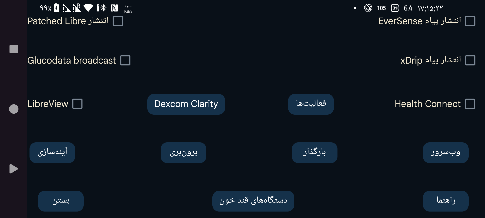

ar az de es fa hi it ja ko nl pl ru tr uk uz en
مقدارهای گلوکز را هر دقیقه به Health Connect ارسال کنید. میتوانید به برنامههای دیگری، مانند Google Fit، اجازهٔ دسترسی به این مقدارها را بدهید. برنامههای دیگر نیز میتوانند به دادههای Google Fit دسترسی پیدا کنند. (Health Connect) (Google Fit) (Google Fit)
Juggluco را برای خواندن دادههای فعالیت از Health Connect پیکربندی کنید.
ارتباط با LibreView را برای ارسال مقدارهای گلوکز و «مقدارها» از حسگرهای FreeStyle Libre 2 و 3 و دریافت شناسهٔ حسابی که هنگام فعالسازی Libre 3 استفاده شده است تنظیم کنید. برای تغییر تنظیمات، این گزینه را لمس کنید.
خود پیام انتشار Patched Libre مشکلی ندارد؛ اما xDrip هنگام دریافت مقدارهای آن، گلوکز را تغییر میدهد. چون معمولاً کاربران فقط برای این کاربرد از آن استفاده میکنند، قصد داشتم این نوع انتشار را حذف کنم.
xDrip مقدارهای دریافتی از انتشار EverSense یا وبسرور Juggluco که بهعنوان منبع Nightscout تنظیم شده باشد را تغییر نمیدهد.
نوع دیگری از انتشار پیام گلوکز است که میتواند هر دقیقه مقداری را به xDrip بفرستد. در xDrip باید منبع دادهٔ سختافزاری را روی «640G/EverSense» قرار دهید.
xDrip تقریباً همهٔ این مقدارها را نادیده میگیرد، چون اصرار دارد فقط یک مقدار در هر ۵ دقیقه بپذیرد. با تغییر کد منبع xDrip میتوانید این محدودیت را بردارید: در فایل app/src/main/java/com/eveningoutpost/dexdrip/models/BgReading.java عبارت 4 * 60 * 1000 را به 55 * 1000 تغییر دهید تا کد زیر به دست آید: (app/src/main/java/com/eveningoutpost/dexdrip/models/BgReading.java)
public static BgReading readingNearTimeStamp(long startTime) {
long margin = (55 * 1000);
return readingNearTimeStamp(startTime, margin);
}مزیت این روش نسبت به Patched Libre این است که xDrip مقدارهای گلوکز را به روشی نامشخص تغییر نمیدهد.
همان پیام انتشار xDrip در مسیر «Settings ← Inter-app settings ← Broadcast locally» را میفرستد. برنامههایی مانند AndroidAPS آن را دریافت میکنند. برخلاف انتشار اصلی xDrip که هر ۵ دقیقه انجام میشد، Juggluco وقتی حسگر هر دقیقه مقدار میفرستد، این پیام را هم هر دقیقه منتشر میکند.
نوع جدیدی از انتشار پیام با کارکردی همانند انتشار xDrip است. نمونهبرنامهٔ سادهای که مقدارهای دریافتی گلوکز را در logcat مینویسد در بخش «انتشار پیامهای گلوکز» قرار دارد. اگر در G-Watch منبع داده را Juggluco تعیین کردهاید، باید این انتشار را روشن کنید. (Glucose broadcasts)
برنامههایی که به این پیام انتشار گوش میدهند نشان داده میشوند. برنامههای مقصدی را که میخواهید دادهها را دریافت کنند انتخاب کنید.
وبسروری که برای ساعتهای xDrip و بعضی برنامههای Nightscout قابل استفاده است. نام پیشین آن «وبسرور xDrip» بود.
ارسال دادهها به سرور Nightscout.
همهٔ دادهها را از طریق اینترنت به نمونهٔ دیگری از Juggluco ارسال میکند تا یک نسخهٔ آینهای از دادهها در دستگاه دیگر ساخته شود. دادههای موجود بازنویسی خواهند شد.
دادهها را در فایل ذخیره میکند.